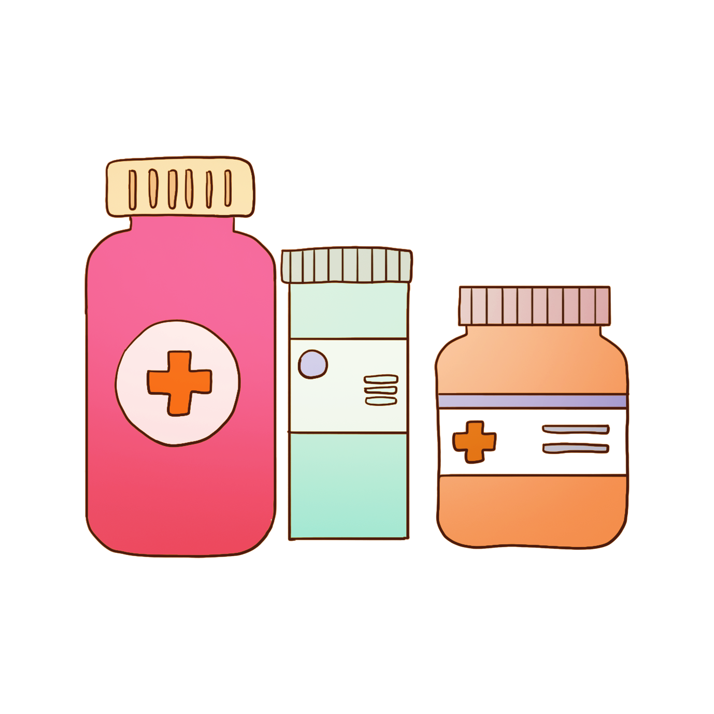
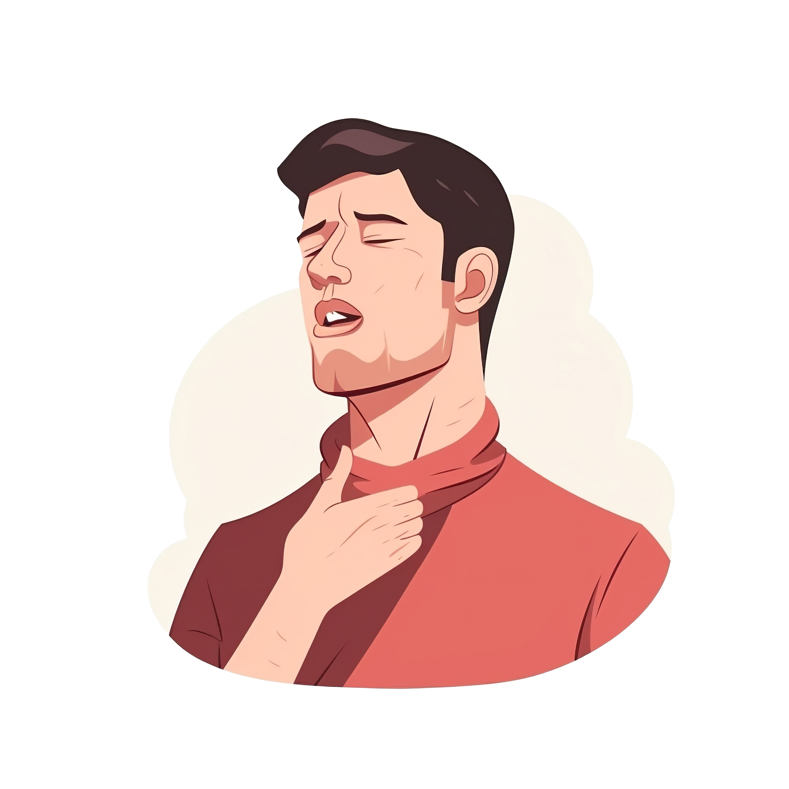
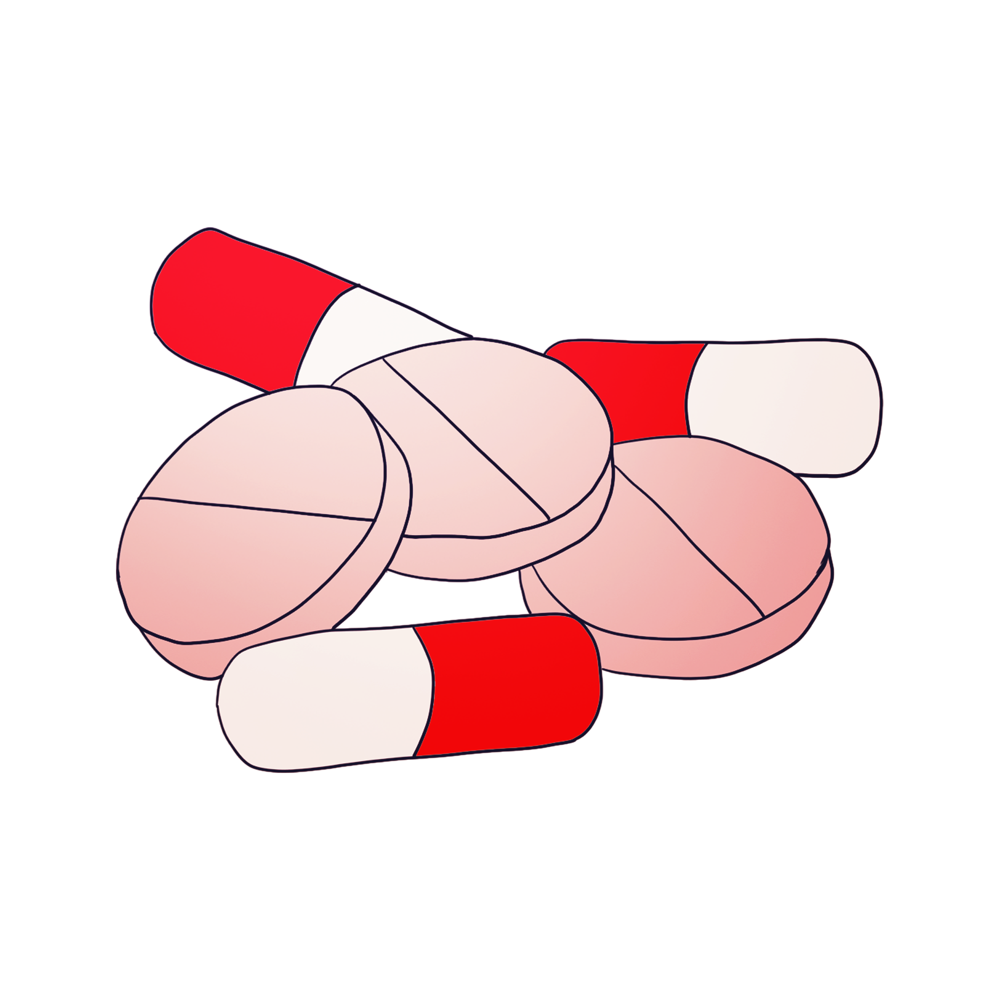
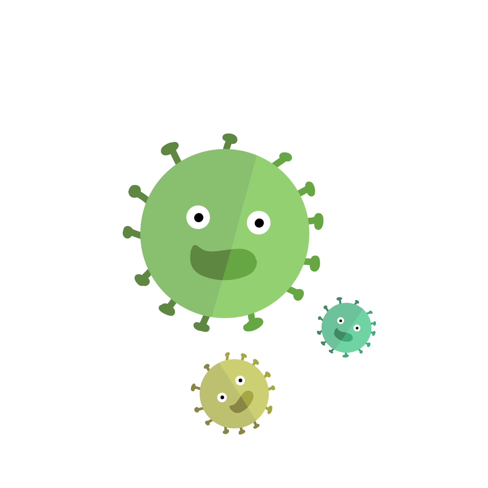
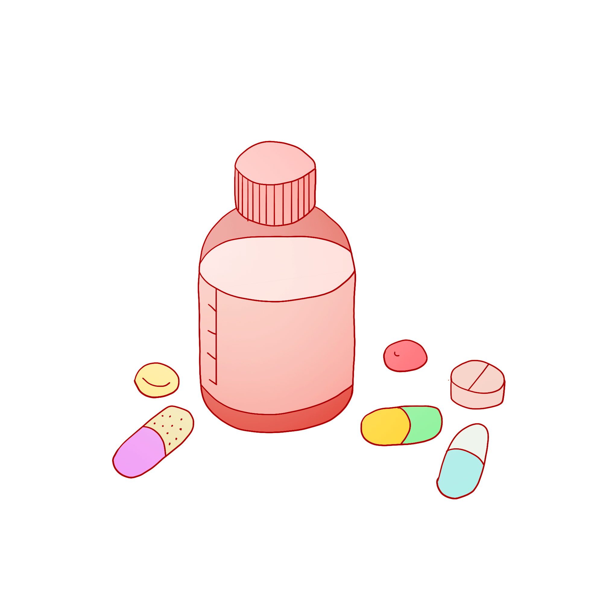
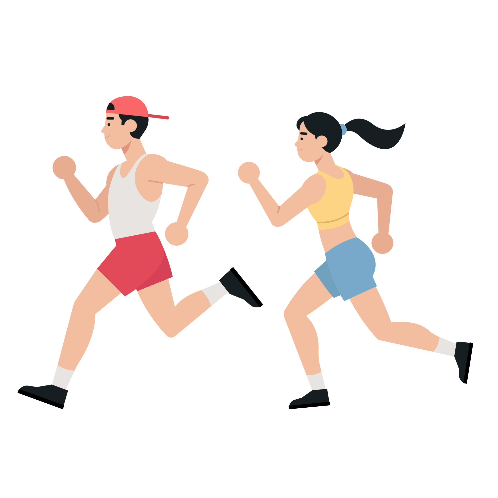

<!DOCTYPE html>
<html lang="en">
<head>
<meta charset="utf-8" />
<title>31397_202403041930</title>
<meta name="viewport" content="width=device-width, initial-scale=1, minimum-scale=1, maximum-scale=1" />
<script src="js/jquery-1.11.3.min.js"></script>
<script src="js/html2canvas.min.js"></script>
<style>
	@font-face {
		font-family: SourceHanSansCN-Heavy;
		src: url('css/font/SourceHanSansCN-Heavy.otf');
	}

	@font-face {
		font-family: SourceHanSansCN-Bold;
		src: url('css/font/SourceHanSansCN-Bold.otf');
	}

	@font-face {
		font-family: SourceHanSansCN-Regular;
		src: url('css/font/SourceHanSansCN-Regular.otf');
	}

	:root {
		--main-bdr-color: #000;
		--title-color: #b0d796;
		--title-stroke-color: #3e2308;
		--subtitle-color: #3c6421;
		--subtitle-bg-color: #fffde6;
		--text-color: #362e2b;
		--summary-color: #3c6421;
		--key-color: #eb6100;
		--key-bg-color: #000;
		--list-key-color: #3c6421;
		--list-circle-bdr-color: #000;
		--list-circle-bg-color: #f9ff58;
	}

	ul {
		padding: 0;
		margin: 0;

		li {
			padding: 0;
			margin: 0;
			list-style: none;
		}
	}

	p {
		margin: 0;
		padding: 0;
	}

	i {
		font-style: normal;
	}

	.bg {
		width: 1200px;
		height: 1600px;
		margin: auto;
		overflow: hidden;
		background: url(img/bg/bg_202403041930.jpg) center top no-repeat;
	}

	.content {
		width: 1000px;
		margin: 0px auto;
	}

	.title-wrap {
		padding-top: 65px;
		text-align: center;

		h1 {
			display: inline-block;
			position: relative;
			height: 80px;
			line-height: 80px;
			-webkit-text-stroke-width: 1.5px;
			-webkit-text-stroke-color: var(--title-stroke-color);
			text-shadow: #000 0 2px 0px;
			text-align: center;
			color: var(--title-color);
			font-size: 50px;
			font-family: SourceHanSansCN-Bold;

			&::before {
				position: absolute;
				top: 50%;
				left: -30px;
				content: '';
				/* width: 142px; */
				/* height: 222px; */
				width: 50px;
				height: 100px;
				transform: translateY(-50%);
				background: url(img/item/title_star_001.png) center center no-repeat;
				background-size: auto 100%;
			}

			&::after {
				position: absolute;
				top: 50%;
				right: -30px;
				content: '';
				/* width: 110px; */
				/* height: 213px; */
				width: 50px;
				height: 100px;
				transform: translateY(-50%);
				background: url(img/item/title_star_002.png) center center no-repeat;
				background-size: auto 100%;
			}
			
		}
	}

	.subtitle {
		display: table;
		position: relative;
		width: auto;
		height: 100px;
		line-height: 100px;
		margin: 20px 0 0;
		color: var(--subtitle-color);

		.right {
			position: relative;
			z-index: 2;
			float: left;
			color: var(--subtitle-color);
			font-size: 54px;
			font-family: SourceHanSansCN-Bold;
		}

		.line {
			position: absolute;
			left: 0;
			right: 0;
			bottom: 15px;
			z-index: 1;
			content: '';
			height: 25px;
			border-radius: 10px;
			background-color: rgba(163, 231, 117, 0.3);
		}
	}

	.text-wrap {
		position: relative;

		.text {
			padding-bottom: 0;
			/*  */
		}
	}

	.text {
		line-height: 64px;
		/* line-height: 80px; */
		padding: 0px 30px 20px;
		margin-top: 0px;
		text-align: left;
		color: var(--text-color);
		font-size: 42px;
		font-family: SourceHanSansCN-Regular;

		i {
			color: var(--key-color);
		}

		b {
			font-weight: 700;
		}
	}

	.summary {
		position: relative;
		line-height: 72px;
		padding: 30px 100px;
		/* margin-top: 80px; */
		margin-top: 50px;
		border: 4px dashed var(--summary-color);
		border-radius: 20px;
		/* text-align: left; */
		text-align: center;
		color: var(--summary-color);
		font-size: 46px;
		font-family: SourceHanSansCN-Regular;
		/* background: url(img/item/border_001.png) center top no-repeat;
		background-size: 100% 100%; */

		&::before {
			position: absolute;
			left: 50px;
			top: 80px;
			content: '';
			width: 46px;
			height: 46px;
			background: url(img/item/icon_start_001.png) center no-repeat;
			background-size: 100%;
		}

		&::after {
			position: absolute;
			right: 50px;
			bottom: 70px;
			content: '';
			width: 46px;
			height: 46px;
			background: url(img/item/icon_start_001.png) center no-repeat;
			background-size: 100%;
		}

		i {
			position: relative;
			z-index: 1;
			color: var(--list-key-color);
			font-weight: 700;

			&::after {
				position: absolute;
				left: 0;
				right: 0;
				bottom: 5px;
				content: '';
				z-index: -1;
				content: '';
				height: 25px;
				background-color: rgba(163, 231, 117, 0.3);
			}
		}

		i.first {
			&::after {
				border-radius: 8px 0 0 8px;
			}
		}

		i.last {
			&::after {
				border-radius: 0 8px 8px 0;
			}
		}
	}

	.pic-wrap {
		position: relative;
		padding-right: 300px;

		img {
			display: block;
			position: absolute;
			right: 0;
			top: 50%;
			/* margin: 50px auto; */
			/* margin: 0px auto; */
			object-fit: cover;
			transform: translateY(-50%);
		}

		.text {
			padding-bottom: 0;
			/*  */
			line-height: 75px;
		}
	}
</style>
</head>

<body>
<div class="bg" id="html-canvas">
	<div class="title-wrap">
		<h1 id="title"></h1>
	</div>
	<div class="content" id="content"></div>
</div>
</body>
<script>
var jsonText = [
	{
		title: '左氧氟沙星VS阿莫西林，怎么选？',

		page: [
			{
				content: [
					/* {
						subtitle: ' 左氧氟沙星',
						subContent:
							`
								左氧氟沙星是一种广谱抗菌药物，常用于<span>治疗各种感染</span>症状。
								
								对于<span>成人</span>而言，其一般用量为<span>每天200-400毫克</span>，但这个剂量并不是固定的，而是需要根据患者的年龄、体重、感染部位以及严重程度进行个体化调整。通常情况下，左氧氟沙星可以<span>每天一次或分次口服</span>，整个<span>疗程一般为5-7天</span>。
								<br><br>
								但如果是针对某些特定的感染，如<span>急性细菌性鼻窦炎</span>或<span>慢性支气管炎</span>的<span>急性细菌性加重</span>，疗程可能会有所不同，可能会<span>延长至10-14天</span>。
								<br><br>
								需要注意的是，左氧氟沙星的剂量和使用方法一定要<span>遵循医生的指导</span>。在用药期间，切勿自行停药或随意更改剂量。如果出现任何不适症状，应及时告知医生。
							`,
					}, */
					
					/* {
						subtitle: ' 阿莫西林',
						subContent:
							`
								阿莫西林是青霉素类抗生素的代表药物之一，对于革兰氏阳性菌和部分革兰氏阴性菌都有良好的抗菌作用。在感冒中，它常用于<span>治疗喉咙痛</span>等症状。
								
								对于成人而言，阿莫西林的一般用量为<span>每次250-500毫克</span>，<span>每天3次</span>。但同样地，这个剂量也需要根据患者的具体情况进行调整。
								
								在用药期间，也需要严格<span>按照医生的指导进行</span>，切勿随意更改剂量或停药。
							`,
					}, */

					{
						subtitle: '用药小贴士',
						subContent:
							`
								1.在使用抗生素时，一定要<span>遵循医生的指导</span>和<span>药物说明书上的建议</span>，确保用药的准确性和安全性。
								<br><br>
								2.抗生素并<span>不是万能药</span>，它们主要针对<span>细菌感染</span>进行治疗。对于<span>病毒感染</span>（如<span>普通感冒</span>）或<span>非感染性疾病</span>，抗生素是<span>无效</span>的。
								
								<br><br>
								3.在使用抗生素期间，要注意<span>观察病情变化和身体反应</span>。如果出现任何不适症状或<span>过敏反应</span>（如或<span>皮疹、呼吸困难</span>等），应立即停药并就医。
								<br><br>
								4.抗生素的使用需要<span>持续足够的疗程</span>，以确保彻底杀灭细菌并防止复发。即使症状在用药几天后有所改善，也不要提前停药。
								
								<br><br>
								5.在使用抗生素期间，要注意<span>保持良好的生活习惯和饮食调整</span>，以帮助身体更好地恢复健康。
								
							`,
					},
				],
			},
		]
	}
];

function setHtml() {
	var html = '';

	jsonText.forEach(function (item, i) {
		var setTitle = item.title || '';
		var setObj = item.page;

		setObj.forEach(function (obj, j) {
			html = '';
			
			obj.content?.forEach(function (contentItem) {
				if (contentItem.subContent) {
					html += `
						<div class="${contentItem.picUrl ? 'pic-wrap' : 'text-wrap'}">
							${contentItem.subtitle ? `
								<div class="subtitle">
									<p class="right">${contentItem.subtitle || ''}</p>
									<i class="line"></i>
								</div>
							` : ''}
							<p class="text" style="${contentItem.subContentStyle || ''}">${contentItem.subContent}</p>
							${contentItem.picUrl ? `  ` : ''}
						</div>`;
				} 
				else if (contentItem.summary) {
					html += `<p class="summary">${contentItem.summary}</p>`
				}
			});

			var $tl = document.getElementById('title');
			var $cont = document.getElementById('content');
			$tl.innerHTML = setTitle;
			$cont.innerHTML = html;
			setKeyWords();
			saveImg(setTitle, j);
		});
	}); 
}

function saveImg(setTitle = '', j = 0) {
	var realHtml = document.getElementById('html-canvas');
	var width = 1200; //获取dom 宽度

	var img_type = 'jpeg';
	// var height = realHtml.offsetHeight; //获取dom 高度
	var height = 1600; //获取dom 高度
	var canvas = document.createElement('canvas'); //创建一个canvas节点
	var scale = 1; //定义任意放大倍数 支持小数
	canvas.width = width * scale; //定义canvas 宽度 * 缩放
	canvas.height = height * scale; //定义canvas高度 *缩放
	canvas.getContext('2d').scale(scale, scale); //获取context,设置scale
	var opts = {
		tainttest: true, //检测每张图片都已经加载完成
		scale: scale, // 添加的scale 参数
		useCORS: true,
		canvas: canvas, //自定义 canvas
		logging: true, //日志开关
		width: width, //dom 原始宽度
		height: height, //dom 原始高度
		name: 'pic'
	};
	html2canvas(realHtml, opts).then(function (canvas) {
		var imgUri = canvas.toDataURL('image/' + img_type, 0.9);
		var saveLink = document.createElement('a');
		saveLink.href = imgUri;
		saveLink.download = setTitle + (j + 1) + '.' + (img_type === 'jpeg' ? 'jpg' : img_type);
		saveLink.click();
	});
}

function setKeyWords(parent = document) {
	const spans = parent.querySelectorAll('span');
	spans.forEach((span, i) => {
		const text = span.textContent;
		const characters = text.split('');
		const wrappedCharacters = characters.map((char, index, arr) => {
			if (index === 0) {
				return `<i class="first">${char}</i>`;
			}
			else if (index === arr.length - 1) {
				return `<i class="last">${char}</i>`;
			}
			else {
				return `<i>${char}</i>`;
			}
		});
		const wrappedText = wrappedCharacters.join('');
		span.outerHTML = wrappedText;
	});
}

setHtml()
</script>
</html>
